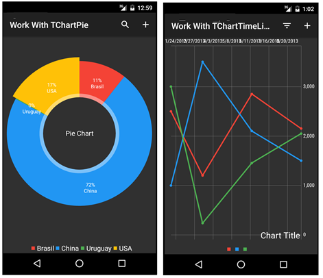
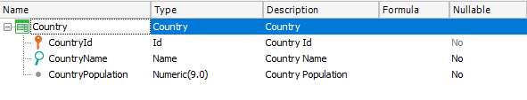
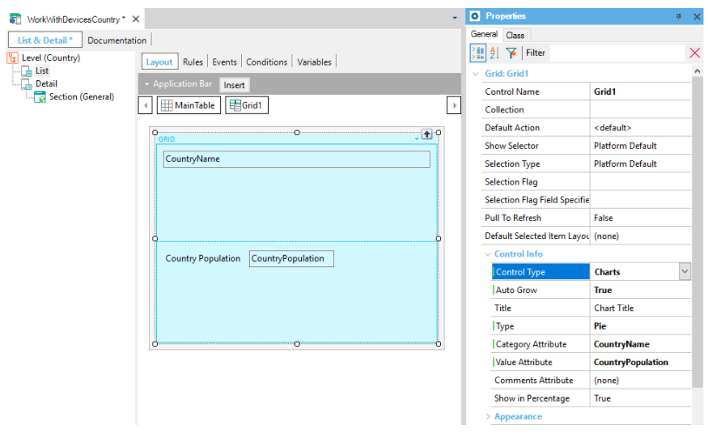
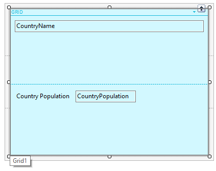
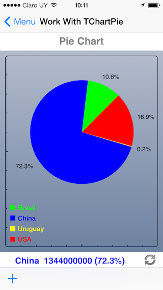
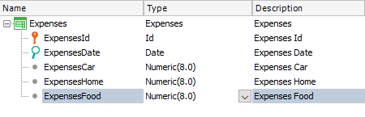
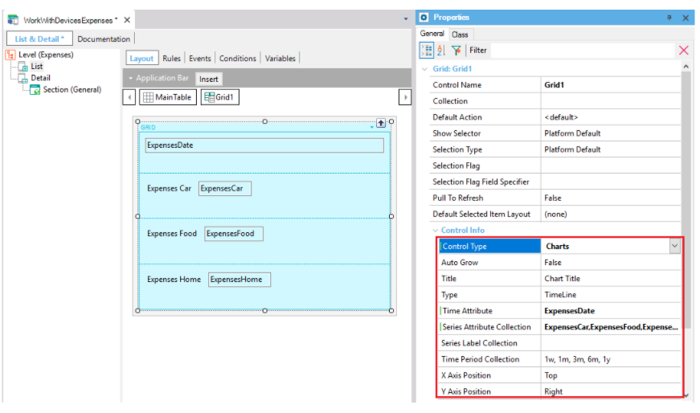
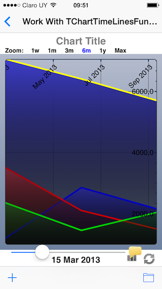
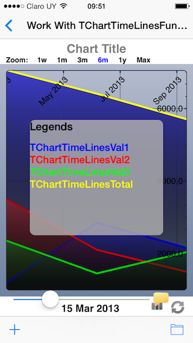

HowTo: Using Charts Control
In many cases, you need to show information in a visual way and Charts are one of the best formats to do so. You can display numeric information corresponding to grid items as a chart, which can be a pie or a timeline (if you have a date attribute):  Below are both examples: Pie chart and TimeLine chart. Example 1This control can be used to take information from a Structured Data Type or Attributes. In this article, Attributes will be used as the information source. The following Transaction object with the Work With Pattern applied (see Applying Work With for Smart Devices Pattern) is going to be used for the example:  Set the following properties on the List node.  Next, configure the properties to make this control work. Take a look at the properties marked on the picture above:
Note 1: If you don't set the Value attribute property, the control will take the first Numeric attribute as the value attribute by default. In this case, you need to set this property because otherwise, the value attribute would be Country Id. Note 2: Make sure that the Value Attribute is on the Grid as shown in the following image:  Done! Your WorkWithDevicesCountry will show in a pie chart the percentages per country of the South American continent population. When a slide is tapped, the value of Category Att is shown below: Example 2This example uses a timeline chart that takes the information from an Attribute. For this example, the following Transaction object is going to be used:  On the List node, configure the following properties: 
Note: You need to have the attributes that you set as the Time attribute and as the Series Attribute collection on the Grid as shown in the image above. Done. This chart will show the evolution of your expenses organized in different categories.   Videos
|